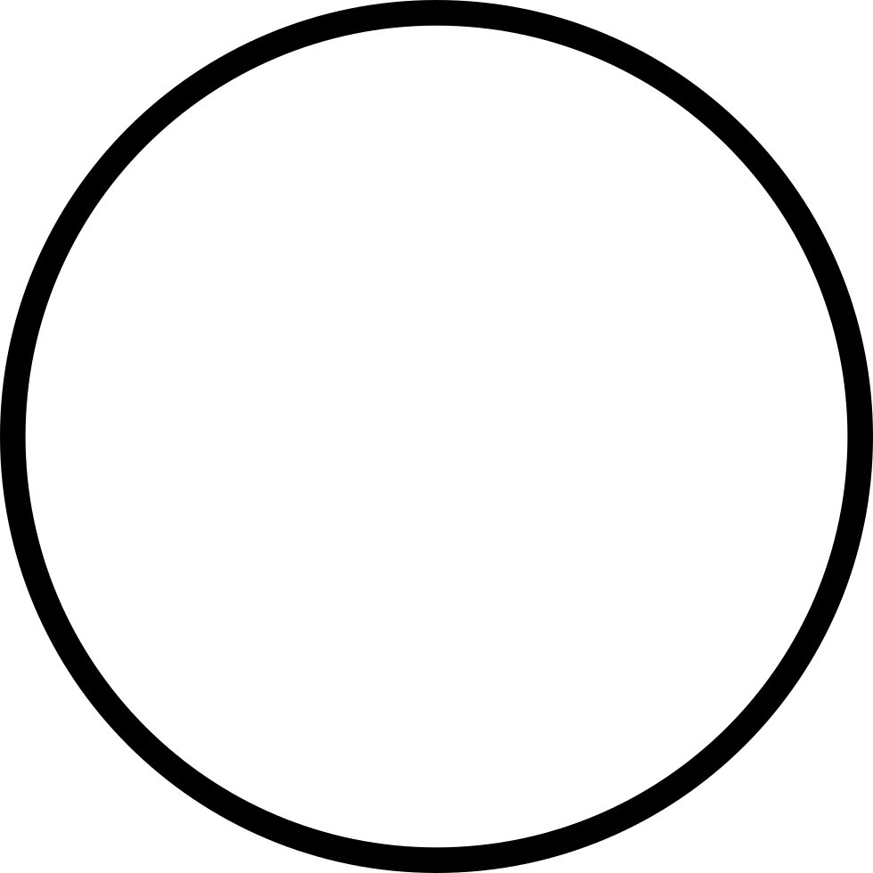

Instructions


This is your cursor. Direct and click this on whatever you want to interact with. This will always be in the center of the screen.
These are clickable buttons or portals that take you to whatever they are linked to, click on them with your cursor to find out where they go.
Use the arrow keys to walk around in the VR experience
Click continue. When re-directed press the 'close' button on screen and wait 15 seconds. Then go and explore my virtual CV